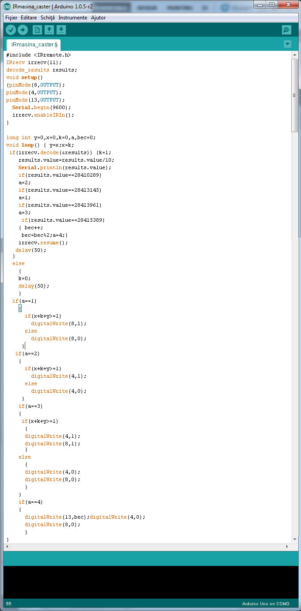

Arduino primește informații de la receptorul IR prin pinul 11. Pinii 8 și 4 trimit impulsul electric spre motoarele DC care invârtesc roțile, datorită faptului că prin pini nu iese mai mult de 3V este nevoie de tranzistori. Pinul 13 este folosit pentru a porni un LED.
Void setup este o structură nerepetitivă in care sunt inițializate unule funcții precum Serial. Void loop este o structura repetitiva care se repetă la infinit.
Deoarece void loop are o viteză mai mare de 3 ori decât cea de transmitere a telecomenzii am memorat in variabilele x, y si k cu 1 și 0 dacă telecomanda a trimis semnal.
Informațiile primite de la telecomada sunt numere de 8 cifre, dar ultima cifra este mereu 5 asa ca am eliminat-o. Variabila bec reține valori 1 sau 0 .
Programul meu funcționează ca un meniu de forma ” apasați butonul x pentru a face asta” , așadar când este apăsat butonul ”sus” variabila ”a” devine 3, iar când ”a” devine 3 mașina merge înainte.